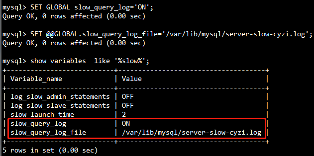

除非特别指定,否则缓冲区大小,长度和堆栈大小这些值的单位都是Byte.
SHOW Statement
MySQL server的变量有两种类型Server system variables和Server status variables,针对不同的状态类型,查看的方式也有所差别.
查看Server system variables变量的语法是1
2SHOW [GLOBAL | SESSION] VARIABLES
[LIKE 'pattern' | WHERE expr]
查看Server status variables变量的语法是1
2SHOW [GLOBAL | SESSION] STATUS
[LIKE 'pattern' | WHERE expr]
这两种查看语法,都带有[GLOBAL | SESSION],表示这两个修饰符是可选的.对于Server variables和Server status来说,这两个修饰符都有下面相同的含义:
- 对于
GLOBAL修饰符,语句显示GLOBAL级别的值. - 对于
SESSION修饰符,语句显示对当前连接有效的值.如果variable或status没有SESSION级别的值,则显示GLOBAL级别的值.LOCAL是SESSION的同义词. - 没有设置修饰符,默认显示的是
SESSION级别的值
对于Server status variables而言,GLOBAL用来表示MySQL server本身某些方面的状态(例如Aborted_connects),或者是所有已连接到MySQL上的客户端的聚合状态(例如Bytes_received和Bytes_sent).
对于Server system variables而言,GLOBAL用于初始化新客户端连接到MySQL所对应的SESSION变量.
SET Statement
上面讲述了利用SHOW如何查看MySQL server中status and variable的值,接下来就是如何设置这些值,并不是所有status and variables的值都是可以设置的.
使用SET可以来设置一些系统变量,这里只讨论设置变量的方式,SET的其他用途这里不对赘述.
要给
GLOBAL级别的System Variables赋值,需要在变量名前面加上GLOBAL关键字或@@GLOBAL.限定符:1
2SET GLOBAL max_connections = 1000;
SET @@GLOBAL.max_connections = 1000;要为
SESSION级别的System Variables赋值,可以在变量名前面加上SESSION或LOCAL关键字,或者@@SESSION.限定符、@@LOCAL.限定符或@@限定符,更简单点,可以不设置任何关键字或修饰符:1
2
3
4
5
6SET SESSION sql_mode = 'TRADITIONAL';
SET LOCAL sql_mode = 'TRADITIONAL';
SET @@SESSION.sql_mode = 'TRADITIONAL';
SET @@LOCAL.sql_mode = 'TRADITIONAL';
SET @@sql_mode = 'TRADITIONAL';
SET sql_mode = 'TRADITIONAL';客户端可以更改自己的SESSION变量,但不能更改任何其他客户端的会话变量.
要将GLOBAL系统变量值设置为编译后的MySQL默认值,或将SESSION系统变量设置为当前对应的GLOBAL值,请将该变量设置为DEFAULT.小案例
以设置慢SQL日志为例,先查询当前数据库中慢SQL日志是否开启:

可以看到,
slow_query_log的值为OFF,这意味着当前数据库并没有开启,slow_query_log_file的值意味着慢SQL日志文件的存储位置.现在我们将慢SQL日志打开,并且将日志文件名称修改.1
2
3--由于slow_query_log和slow_query_log_file都是GLOBAL级别的变量,需要添加GLOBAL或@@GLOBAL修饰符
SET GLOBAL slow_query_log='ON';
SET @@GLOBAL.slow_query_log_file='/var/lib/mysql/server-slow-cyzi.log';

现在已经成功修改了慢SQL日志的存储文件,执行一条慢SQL也会将日志写进这个指定的文件中.现在,我们想把这两个值修改成默认值,就可以执行以下SQL:
1
2SET GLOBAL slow_query_log=DEFAULT;
SET @@GLOBAL.slow_query_log_file=DEFAULT;
Server system variables(服务系统变量)
datadir
MySQL server数据目录的路径.
general_log
general-log[={OFF|ON}]是否启用常规查询日志.值可以为0(或OFF)来禁用日志,也可以为1(或ON)来启用日志.日志输出的路径由log_output系统变量控制;如果该值为NONE,则即使启用了日志,也不会写入任何日志记录.
general_log_file
general-log-file=file_name,常规查询日志文件的名称.默认值是host_name.log,但是可以通过--general_log_file选项改变.
log_output
常规查询日志和慢SQL日志输出的一个或多个目标位置.该值是一个列表,该列表从TABLE,FILE和NONE中选择一个或多个逗号分隔的单词.默认情况下,这个变量的值是FILE,在general_log和slow_query_log都开启的情况下,MySQL server中的日志将会写到slow_query_log_file和general_log_file变量的值所代表的文件文件中.若是这个变量的值是TABLE,则日志会分别写入mysql.general_log(常规日志)和mysql.slow_log(慢sql日志)这两张表中.若是这个变量的值是NONE,则既不会将日志写入到表中,也不会写入到文件中.因为变量的值可以设置多个,比如TABLE,FILE,则日志既会写入到文件中,也会写入到表中.
slow_query_log
slow_query_log=[={OFF|ON}].慢SQL日志是否开启.取值为0(或OFF)表示关闭日志,1(或ON)表示开启日志.日志输出的目标位置由log_output系统变量控制;如果该值为NONE,则即使启用了日志,也不写入日志.
slow_query_log_file
slow-query-log-file=file_name.慢SQL日志的名称.默认值是host_name-slow.log,但是初始值可以被--slow_query_log_file选项改变.
只有slow_query_log_file的值是确定的,并且slow_query_log=ON,慢SQL日志才会开启并写到文件中.
Server status variables(服务状态变量)
Aborted_clients
由于客户端在未正确关闭连接的情况下死亡而中止的连接数
Aborted_connects
表示连接到MySQL server失败的次数.
Bytes_received
表示从所有客户端接收到的字节数量.
Bytes_sent
表示发送到所有客户端的字节数量.
Connections
尝试连接MySQL服务器的次数(不论成功与否).